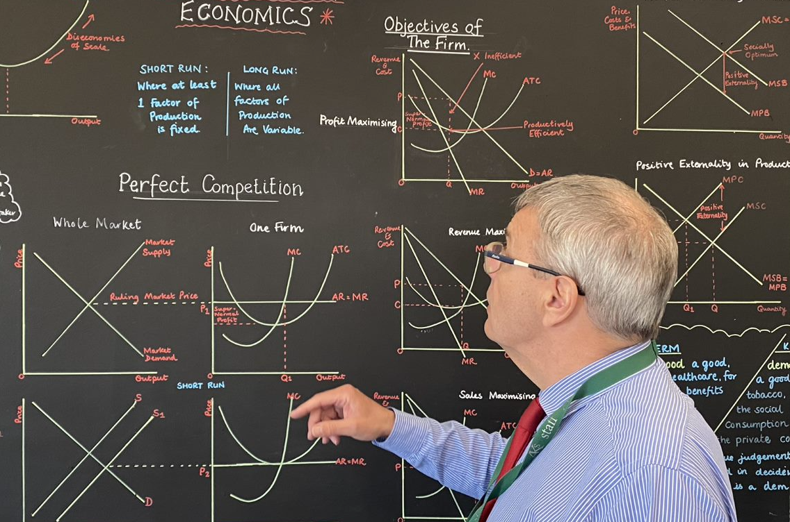

What did the teacher do wrong.
Each diagram has four reasons a teacher might have drawn the diagram on screen. Pick the reason the teacher got wrong.
0 / 0
reasons spotted
Short run: aggregate demand shifts right along SRAS
E1 is the starting short-run equilibrium. AD shifts right to AD2 and the economy moves along SRAS to E2. The price level rises from P1 to P2. Real GDP rises from Y1 to Y2. SRAS has not shifted, and LRAS is not drawn.
Long run: aggregate demand shifts right at full employment
LRAS is vertical at full employment (FE). AD shifts right from AD1 to AD2. Both equilibria are on LRAS, so real national output stays at FE. The price level rises from P1 to P2. SRAS is not drawn.
Long-run growth: LRAS shifts right
LRAS shifts right to LRAS2. Potential output rises from Y1 to Y2. AD1 does not shift, so the economy moves down along AD and the price level falls from P1 to P2.
Question 1 of 8
Which of these is not a valid reason for drawing this diagram?